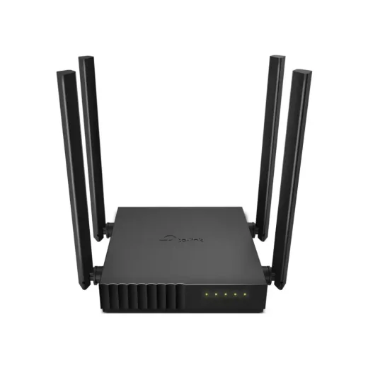
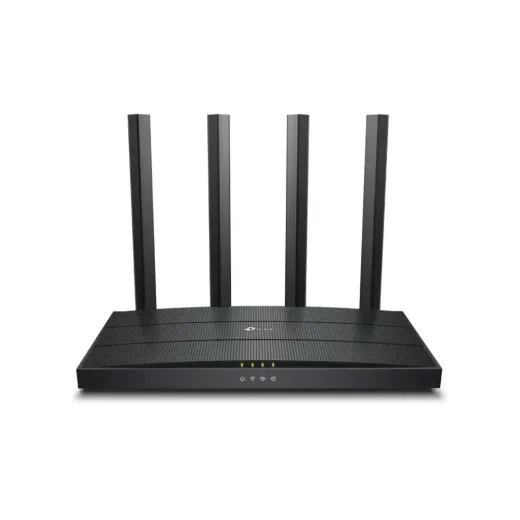
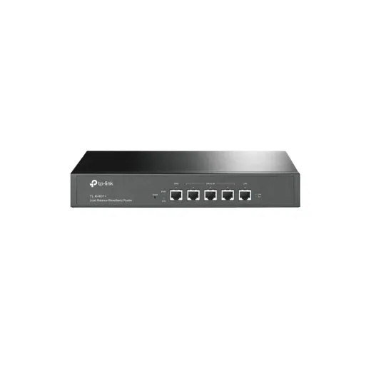
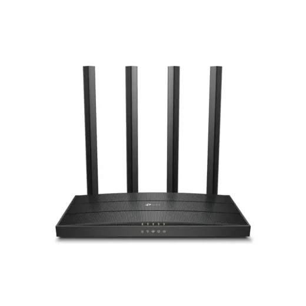
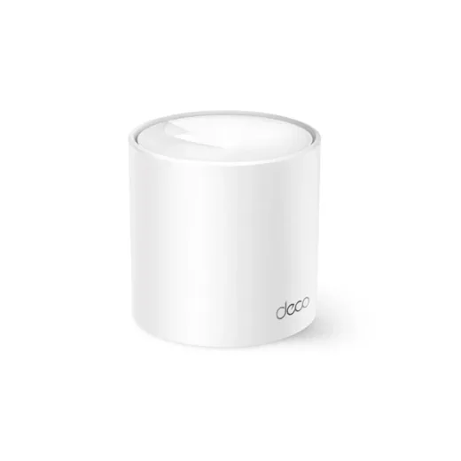
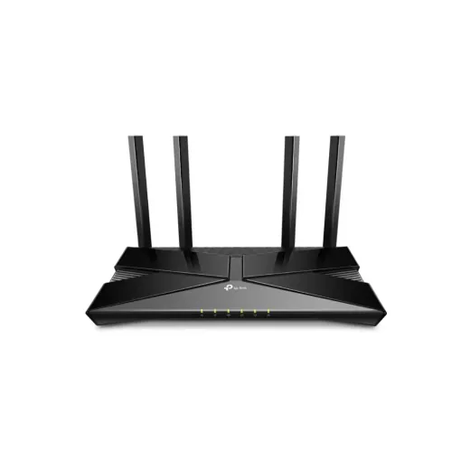
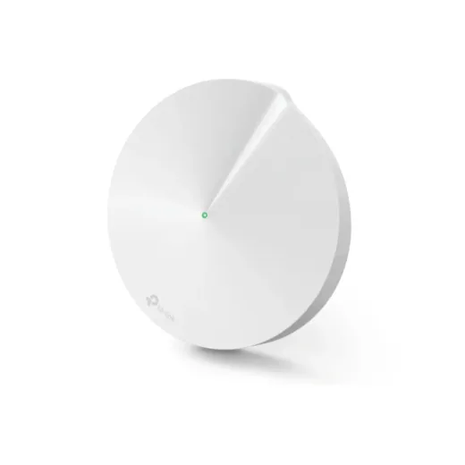
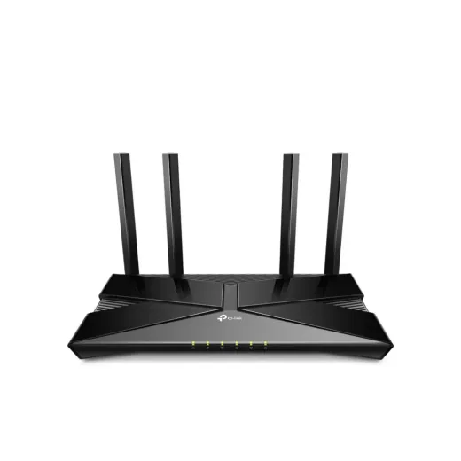
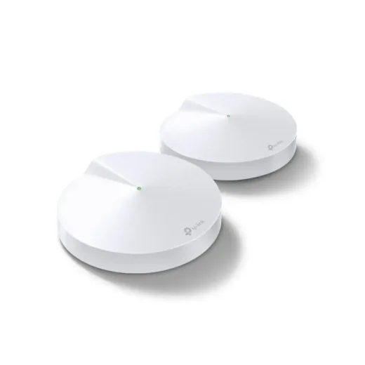

Inicio › Routers y redes › Tplink
Routers y redes Tplink en Honduras: precios comparados
9 productos Tplink en 1 tiendas (Sycom). Desde L 945.

Router Inalambrico TPLINK Archer C50 AC1200 Dual BandL 945En Sycom
Router Inalambrico TPLINK Archer AX12 AX1500 Dual Band Wifi 6 N/DL 1,485En Sycom
Router Alambrico TPLINK Balance Broadband TL-R480T+ RackeableL 1,495En Sycom
Router inalambrico TPLINK Archer C80 AC1900 MU-MIMO N/DL 1,595En Sycom
Router TPLINK Mesh Deco X10 AX1500 Wifi 6 (1 Pieza)L 1,995En Sycom
Router Inalambrico TPLINK Archer AX23 Wifi 6 AX1800L 2,150.01En Sycom
Router TPLINK Mesh Deco M5 AC1300 (1 Pieza)L 2,195.01En Sycom
Router Inalambrico TPLINK Archer AX53 AX3000 Dual Band Wifi 6L 2,695En Sycom
Router TPLINK Mesh Deco M5 AC1300 (2 Pieza)L 3,795En Sycom
Preguntas frecuentes
¿Dónde están más baratos los routers y redes Tplink en Honduras?
Revisa cada producto: mostramos el precio en cada tienda.